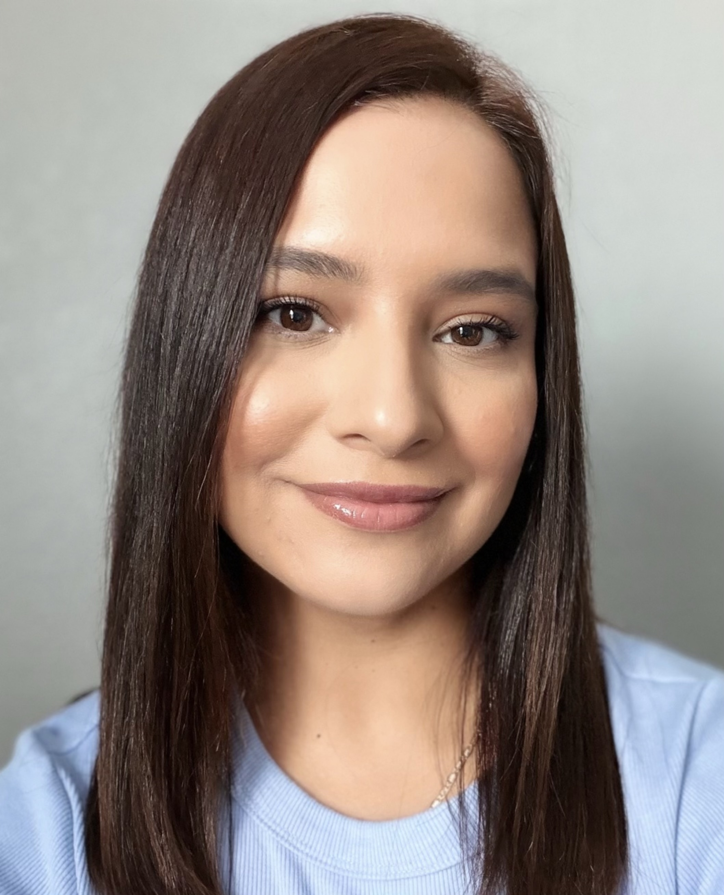

About Us
We provide in person play-based sessions to infants and toddlers (0-3) with developmental disabilities, developmental delays or who are considered at risk.
Support • Growth • Community
MiniWonders is a welcoming place where families can quickly learn who we are, explore helpful resources, and get to know the team that supports them.
We provide in person play-based sessions to infants and toddlers (0-3) with developmental disabilities, developmental delays or who are considered at risk.
We use the Hawaii Early Learning Profile (HELP). Our curriculum is comprehensive, family-centered and it’s an ongoing assessment process for infants and toddlers with developmental disabilities or developmental delays.
Service areas that we cover for in-home sessions include Azusa, Baldwin Park, City of Industry, Covina, Diamond Bar, Duarte, El Monte, South El Monte, Glendora, Hacienda Heights, La Puente, Monrovia, Pomona, Rowland Heights, Walnut and West Covina.
Our Team
Our Early intervention specialists obtain bachelors degrees in child development, Early Childhood Studies or related fields.

Director
Vanessa is the program director for Mini Wonders and has 10 years of experience working with children ages 0-5, eight years have been in the Early Intervention field. Vanessa has dedicated her career advocating for families and helping children thrive developmentally. Vanessa obtained a master's degree in early childhood studies/Primary Education from Cal State Los Angeles (2025) along with a bachelor's degree in early childhood studies from Cal Poly Pomona (2019) and 2 associate's degrees from Mt. San Antonio College; Child Development and Educational Paraprofessional (2016). When Vanessa is outside of work, she spends time with her family, spends time outdoors, and enjoys trying out new restaurants.
Helpful Information
This section is ready for outside resources, downloadable guides, referrals, and trusted organizations you want families to have access to.
Let’s Connect
Please reach out to us using the information provided.
Email: contact@mini-wondersed.com
Phone: (626) 413-2078
Location: San Gabriel Valley / Pomona
Hours of Operation: Monday-Friday 9:00am-5:00pm, Saturday 9:00am-1:00pm, Sunday Closed
Follow us on Instagram: @miniwondersed